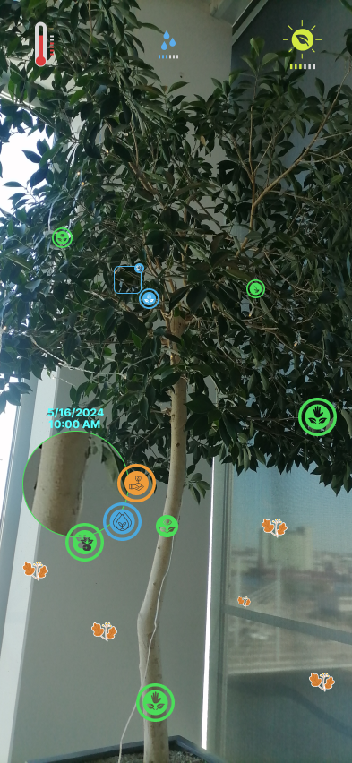

AR Reflective Plant Care
AR Reflective Plant Care on Smartphones
Type: Participatory Design & More then Human Design Project
Role: Development, Interface Design, Research, Sketching, Rapid Prototyping
Team: Individual
Tools & Libraries: Have to write the tools as well.

Overview
AR Reflective Plant Care have to fill in overview.
Indoor plant care is asymmetrical and challenging task for plant caretakers, because of plants reacting and growing on a completely different time scale than human observation. This delay feedback loop leaves beginners uncertain if their past actions helped of harmed plants.
This project has its main focus on a proximity, non-invasive AR reflective tool for smartphones and other devices, design to inform users in making better decision through active documentation of their practices, such as close-up observations and tracking subtle environmental changes. This designed project transforms and bring the plant's delayed feedback behaviours into intuitive visual cues.
Demo Video Example
Do you want to know more?
Design Process & Methods
The methods for this studio project were based on More-than-Human Design and Participatory Design, which were used to observe phenomas of the current practices, while also exploring the design space through rapid prototyping and sketching. The design process was based on a series of iterations, where each iteration was informed by the previous one, and the feedback from the participants.
The fieldwork, interview and observations were conducted with 8 participants, who were tasked with actively recalling me to observe their plant care practices, when needed. The target group was expanded across three distinct experience levels (beginner, a knowledgeable hobbyist and a licensed gardener). Most used observational cues from the plant's visual, scent and tactile feedback, while also relying on their own memory and experience to make decisions. This resulted in formulating a HMW (How might we) statement:
"How might we engage and inform users to make better decisions from each state of the plant's feedback, while also considering the delayed gap between user's past mistakes and the current state of the plant?"
Technologies Used
For this project I used NFC's to tag and simulate tasks for beginners, while also implementing a simple AR overlay by manipulating Meta Spark Sudio for integration. Also, some earlier iterations involved sticky notes and images taken a few days before of the same plant tested onto.
Figma was being used for the UI design and also testing before implementation. This project took 3 weeks to complete.
Key Learnings
- The slow shift of the plant's behaviour past actions become easy to forget. This concept became very efficient in closing that memory gap because of the lack of overwhelming information (since simbols and images were used mostly).
- Pointing markers became more effective in guiding users of the almost "invisible" cues such as smell, texture, form and color